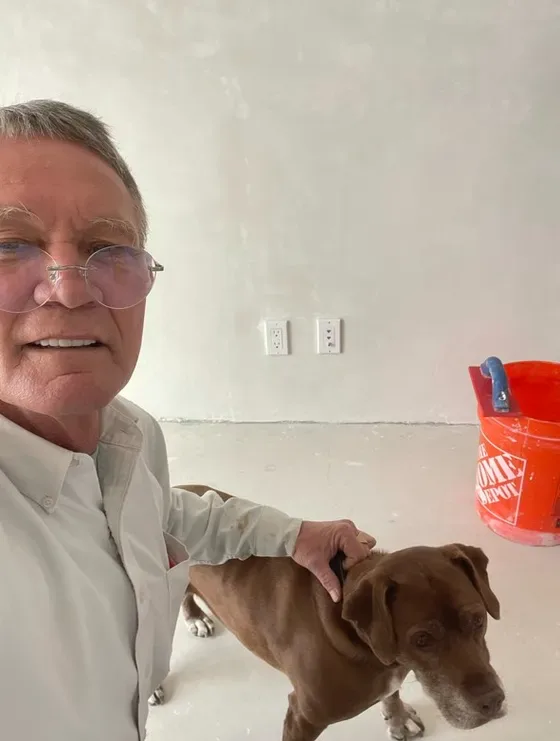

Waterproofing Barrier Systems
Stucco waterproofing barriers combined with plaster components and modern flashing techniques — the wall built as one integrated water-management system.
Owner & Principal · Fogg Construction, Petaluma CA
Rick Fogg has spent 41 years in the waterproofing and plaster trades, and has run Fogg Construction for more than two decades. He has worked alongside architects, designers, owners’ representatives, and property owners to deliver each project’s intended outcome — with special care for detail, schedule, and budget.
That career has been built on a simple discipline: diagnose before you repair. Most stucco damage traces back to a barrier or flashing failure, not the finish coat — and the contractor who can read where the water actually enters is the one who fixes it once.

Stucco waterproofing barriers combined with plaster components and modern flashing techniques — the wall built as one integrated water-management system.
Exterior envelope moisture-infiltration detection and corrective solutions: reading how water moves through stucco and plaster assemblies, then fixing it at the source.
Custom stucco texture matching in both cementitious and acrylic systems — repairs and additions finished to blend invisibly with existing walls.
Hand-troweled, polished Venetian plaster for walls and ceilings — smooth, colored finishes with depth no paint can reproduce.
CSLB License #844981 (B — General Building, C35 — Lathing & Plastering), insured, with professionalism and peace of mind built in.
41+ years in the waterproofing and plaster trades — diagnosis and craftsmanship that only time on the wall can teach.
At home working with architects, designers, owners’ reps, and owners directly — special care for details and changes within schedule and budget.
Outcomes delivered within the schedule parameters and budgets the project was planned around.
“They were fantastic! The owner came out himself to bid the job, threw in some stucco patchwork that was needed outside of the immediate area to be fixed. The crew was on time, worked quickly, and didn’t leave any debris behind (cleaned up the area perfectly). Not the cheapest, not the most expensive either, but the expertise and skill was evident and I couldn’t be happier. I highly recommend Fogg.”
Describe the symptom — we’ll find the cause and scope the fix honestly.